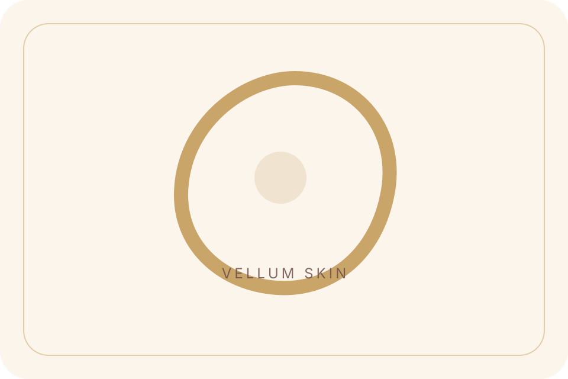
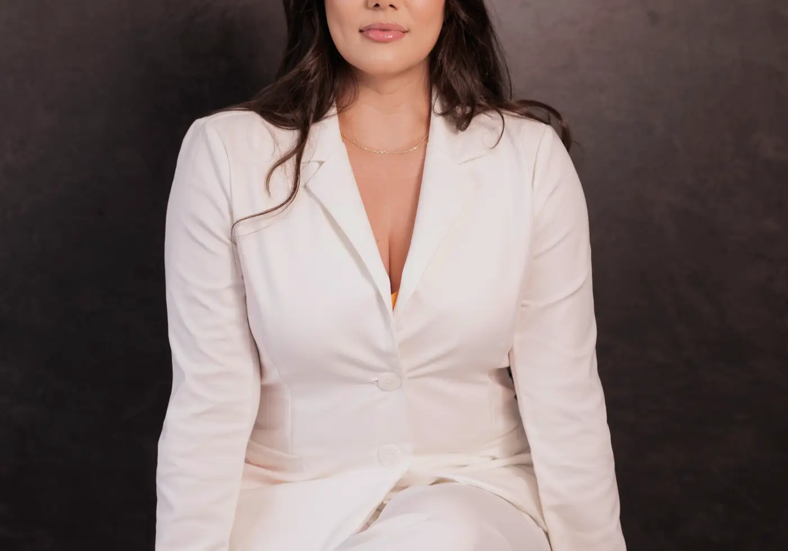
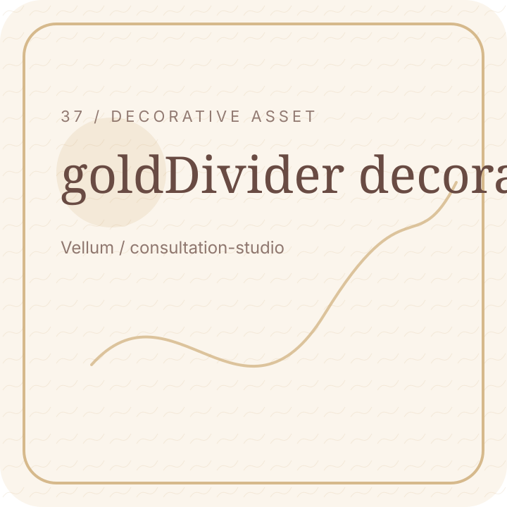
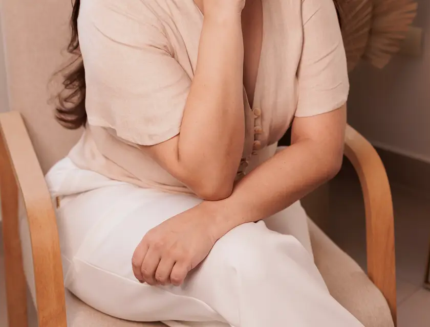
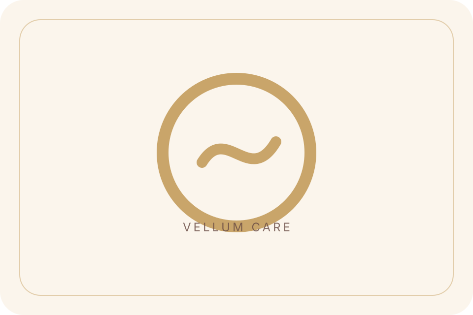
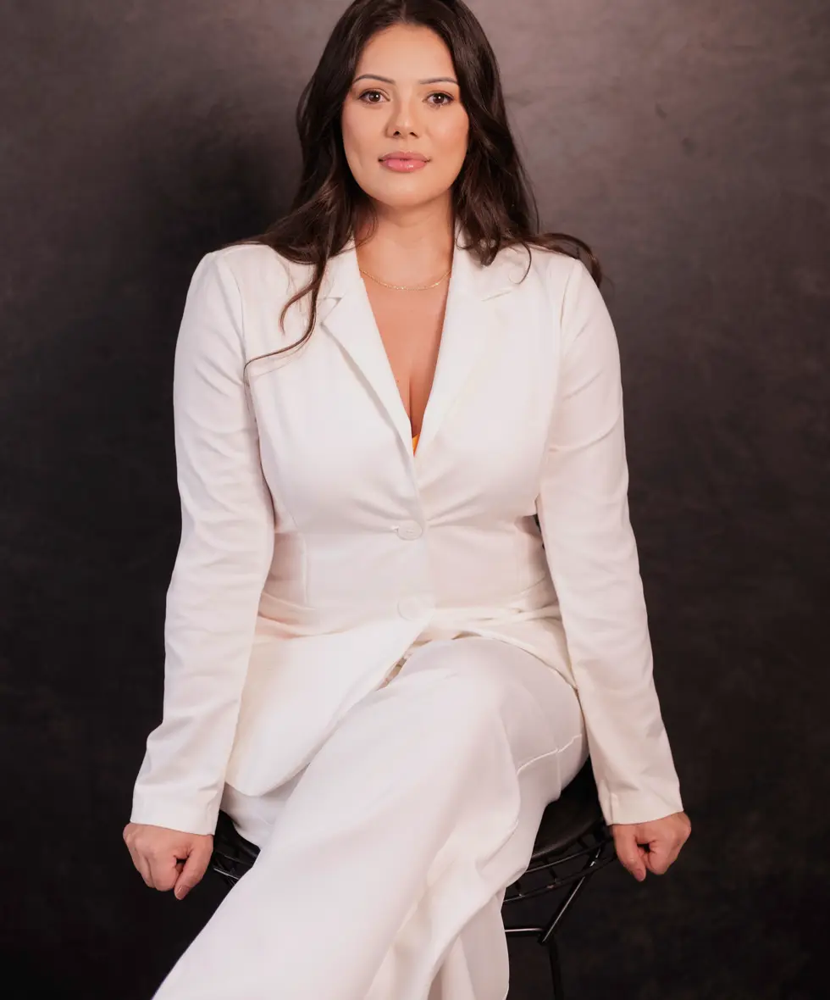
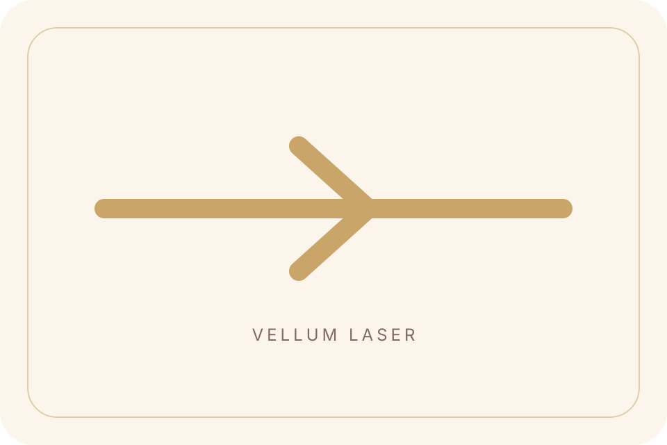
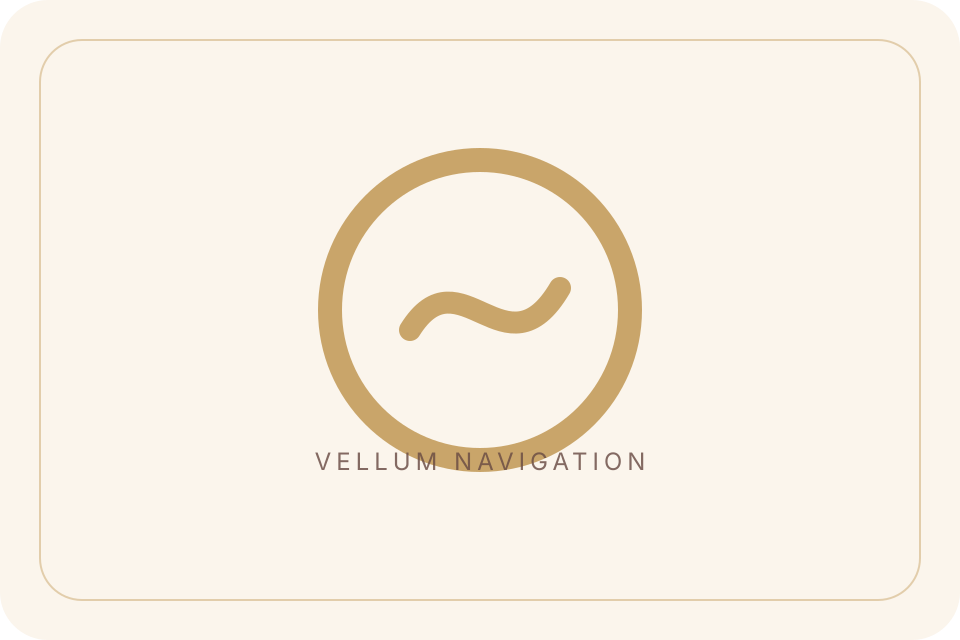
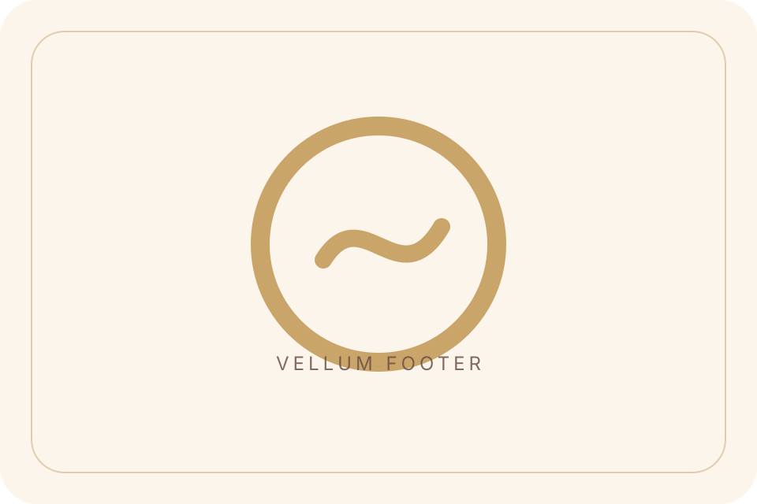
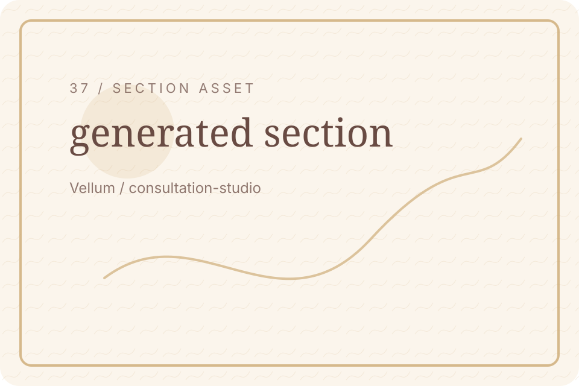

Skin
Skin context.
Vellum / Blog Hero
Deeper educational notes for skin, laser, care, and expectations.

Vellum / Education Break
Useful reading makes consultation clearer.



Vellum / Consultation CTA
Bring your questions into a consultation.

Vellum / Featured Guide
Start with the guide most relevant to your questions.
Vellum / Article Categories
Choose skin, laser, care, or results guidance.

Skin context.

Suitability first.

Attentive guidance.

Realistic goals.
